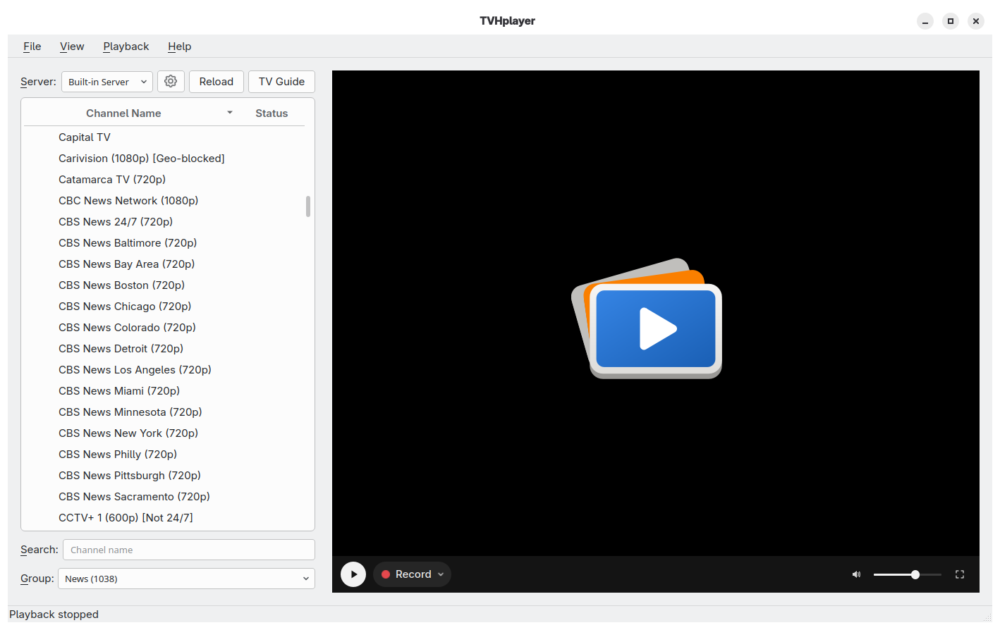

A guide built for watching
See every channel against time, then watch or schedule a recording straight from the guide.
Watch, browse and record live television from a focused desktop app—with a built-in Tvheadend server on Linux, or any server you already run.
Also available for Windows, macOS, Debian and Fedora.
TVHplayer keeps live video, what’s on now, what’s next and your channel groups together—without turning television into a browser tab.

Stay in the pictureFullscreen playback with on-screen controls.
Know what’s nextNow, next and progress at a glance.
See every channel against time, then watch or schedule a recording straight from the guide.
Record on your server or this computer, including several channels at once. Save as MPEG-TS, MP4 or Matroska.
Set up USB, PCIe, SAT>IP and HDHomeRun tuners, import M3U playlists, or connect to an existing Tvheadend server.
Light and dark themes, full keyboard control and screen-reader support make the app comfortable to use your way.
Start with the built-in server on Linux, or point TVHplayer at the Tvheadend server you already use.
Use a supported tuner, an IPTV playlist, or your existing server.
Scan, import and organize them into the groups you want to see.
Watch live, open the guide, or set a recording without leaving the app.
TVHplayer is free and open source. Choose the build for your desktop and get watching.